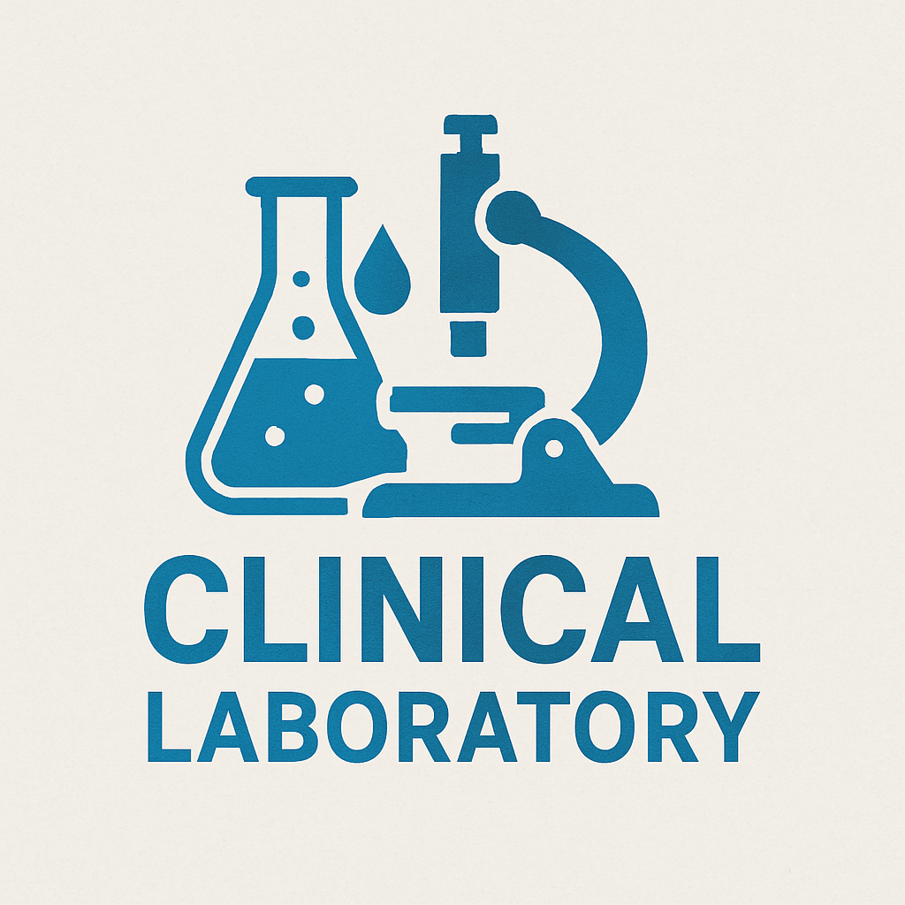
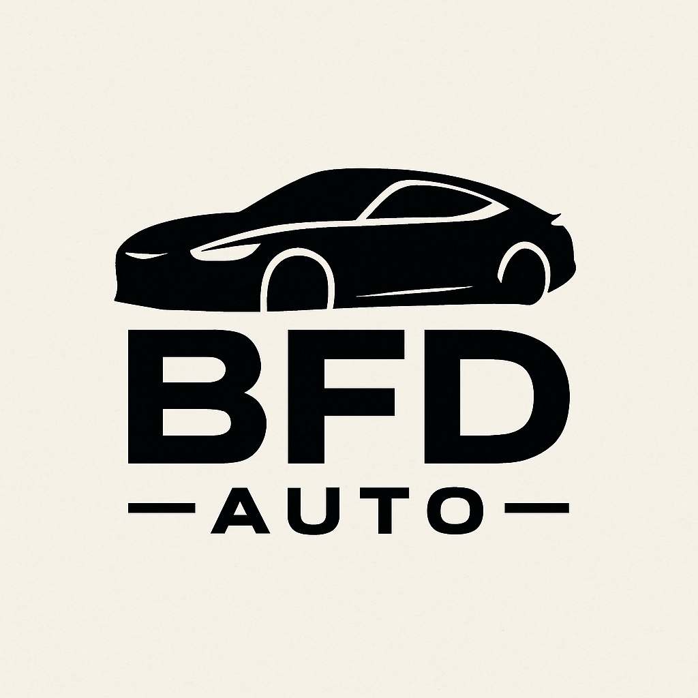
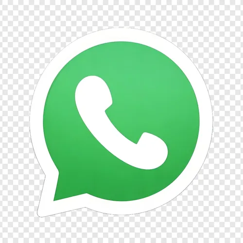

Estudiante avanzado de Tecnicatura en Programación (UTN) proactivo y orientado a resultados. Cuento con experiencia práctica en el desarrollo de aplicaciones web full-stack (ASP.NET, C#, SQL Server) y software de escritorio (C++). Sólidos conocimientos en metodologías ágiles (Scrum/Kanban) y actualmente expandiendo mis habilidades en PHP y MySQL. Busco una primera oportunidad laboral (pasantía o puesto junior) donde aplicar mi capacidad de resolución de problemas y aprendizaje rápido en un equipo de desarrollo.
Tip: ¡Haz clic en la imagen de cada proyecto para ver el código en GitHub!

El proyecto consiste en el desarrollo de un sistema informático en lenguaje C++ orientado a la gestión de un laboratorio de análisis clínicos. Permite llevar un control eficiente de los pacientes, los estudios solicitados, los resultados y la emisión de reportes, facilitando las tareas administrativas y técnicas del laboratorio.

Consiste en el desarrollo de una aplicación de escritorio en C#, diseñada para gestionar de forma eficiente las operaciones básicas de una concesionaria. Permite el control del inventario, administración de clientes y seguimiento de ventas mediante una interfaz gráfica funcional.
